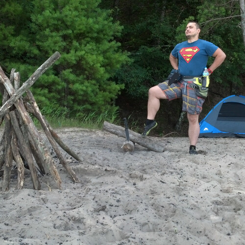

Whoop De Doo at Nordhouse Dunes

Whoop De Doo at Nordhouse Dunes
Some adventurers,
wrestle bears.
Others,
runaway from their fathers.
I,
bemoan the lack of Wi-Fi.
That is, until the night comes about,
at which point all the wild creatures come out.
I've heard stories of owls swooping down from the air,
just to rip out whatever is left of a man's hair.
Then there are the occasional mad deer,
always shimmy-shammying around like they had a beer.
The coyotes are especially frightening,
they come in groups, flashing their eyes like lightening.
One time I tried to turn on a flashlight,
as it turned out - to all the big spider's delight.
Let me tell ya, It takes a man with a lot of brass,
not to scream, when a spider crawls out with a huge glowing ass.
Once, an older lady from a near by camp went to get more booze from her car,
and then misjudged her distance, and walked back too far.
I was sleeping on the ground in my tiny tent,
and then all of a sudden she started yelling out in her lost torment.
Of course, in the middle of the night, and woods and my sleep,
she didn't sound like a lady but rather some huge creepy creep.
She found her way back, and I am sure they partied hard,
but not knowing what made all those screams, I slept - on guard.
Porcupines, oh, you've never seen one like I did,
it was huge, covered in spikes, and really fit.
It could outrun a car or two,
probably, bite a tire and chew.
But then I came across a sign,
and it turned out that the biggest creature, was not the Porcupine,
I was always pretty happy that none of the creatures that bite,
could actually take me down in a single swipe.
But the sign read, Beware Of Bear
and that to me was the biggest scare.